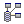

|

|
 |
Chapter 4
Application |
 |
4. 應用程式
(application)
新增應用程式 (create new application)
群組 (workgroup)
工具
(tool)
jLIVE
Builder™ 應用程式模組包含【應用程式
(application)】、【資料庫
(database)】、【視窗畫面
(form)】、【報表
(report)】 及【執行程式
(execute program)】，按下新增鍵後，在控制面板中將會出現應用程式模組以及各個節點
(nodes)。新增應用程式，必須先開啟
jLIVE ™ middle
ware 並指明其所在的URL，可以按連結測試鍵，測試是否連結成功。
4.1 新增應用程式 (create new
application)
新增應用程式時，請點選【
jLIVE
Builder™ 控制面板 】【
應用程式 】，然後按下右側的按鈕
新增應用程式
 ( 按下後會出現下圖 )。 ( 按下後會出現下圖 )。
-
取消
( cancel create operation )
(
取消新增動作 )
-
新增 ( create new program)
( 新增應用程式 )
-
測試
( test middleware connection )
 ( 測試連結
jLIVE ™ middle ware )：當新增程式之後，才可以使用此功能。測試連結成功後，會傳回 jLIVE ™ middle ware
的版本說明。
-
刪除 (
delete this program )
 ( 刪除此程式
)：當新增程式之後，就會出現此圖示。執行後系統將會移除控制面板上的節點，相關的檔案資料不受影響，不會被刪除。 ( 刪除此程式
)：當新增程式之後，就會出現此圖示。執行後系統將會移除控制面板上的節點，相關的檔案資料不受影響，不會被刪除。
-
儲存 (
save modified settings )
 ( 儲存設定
)：當新增程式之後，就會出現此圖示。任何的設定修改後必須存檔。 ( 儲存設定
)：當新增程式之後，就會出現此圖示。任何的設定修改後必須存檔。
-
技術文件產生 (jLIVE document builder )
 jLIVE 技術文件產生器，參閱 jLIVE
技術文件。 jLIVE 技術文件產生器，參閱 jLIVE
技術文件。
-
專案名稱 (project name)：jLIVE™ Builder 可以在一個專案中，產生多個執行方式不一樣的程式。
-
HTTP：jLIVE™ 中間層 ( jLIVE ™ middle ware ) 的 URL。輸入
IP 或主機名稱 (host name) 和 Port。以上的範例使用 www.jlive.com.tw 和 8080 Port。"/servlet/com.probe.jslive.ProbeServlet"
這一個字串並不允許任何修改否則會無法執行應用程式。
-
2nd MW_HTTP (2nd middle ware)：建立多個同時在此應用程式存取資源的 jLIVE
™ middle ware ，參閱 異地應用伺服器同時存取 (multiple application server access
simultaneously)。
-
傳輸資料加密 (transmitted data encryption)：
將傳輸的資料先經過 Session Key
加密後再傳送。
-
I18n 多國語言 (internationalization) ：選取應用程式欲支援的語系，參閱
國際化--多國語系應用程式。
-
Java™ 原始程式 UTF-8 編碼
(UTF-8 Java™ source code)：產生以
UTF-8 編碼的 Java™ 原始程式檔 (*.java)，不核選 (uncheck) 時，以本機 OS 語系編碼。以 UTF-8 編碼的
Java™ 原始程式檔 (*.java) 必須在 jLIVE Builder™ 或支援 UTF-8 編碼的文件編輯器中 (例如：Microsoft
Word) 才能正確顯示。在 jLIVE Builder™ 開發環境中，設計師可以直接使用各種語言文字，產生原始程式檔 (*.java) 時，jLIVE
Builder™ 將以 UTF-8 編碼輸出 Java™ 原始程式，編譯 (compile) 原始程式時，jLIVE Builder™ 會指示
javac 以 UTF-8 編譯 (compile) 原始程式。核選 (check) 或更動此選項後，請重新產生 Java™ 原始程式 (XML
--> Java™)，jLIVE Builder™ 在產生(generate)、編譯 (compile)、檢視(view)原始程式時，皆根據此設定。參閱
國際化--多國語系應用程式。
-
登入 (login)：使用 jLIVE Builder™ 的登入機制 ，
需要帳號及密碼，如果要使用預設的登入機制，點選此選項。
-
作者 (author)：作者名，可不填寫。
-
版本 (version)：版本別，可不填寫。
-
路徑
(path)：應用程式的檔案資源路徑。
-
存取鍵 (access key)：工作群組存取本機資源的授權碼，可以是任何字串值，如果有群組內的成員要進入此應用程式專案協同開發，則必須要有此存取鍵值。
-
群組 (work group)：按購買的 jLIVE Builder™
系統授權數而定，在第一欄位中填入其他專案工作群組的電腦名稱或IP，第二欄位填入該成員的專案存取鍵值，執行工作群組掃描時，即可分享同一專案名稱下的設計視窗模組。
-
敘述
(description)：應用程式的描述。
▲Top
Copyright © 2001~
2004 Probe Technology . All Rights Reserved.
Questions, comments,
and suggestions to Service@probe.com.tw
|